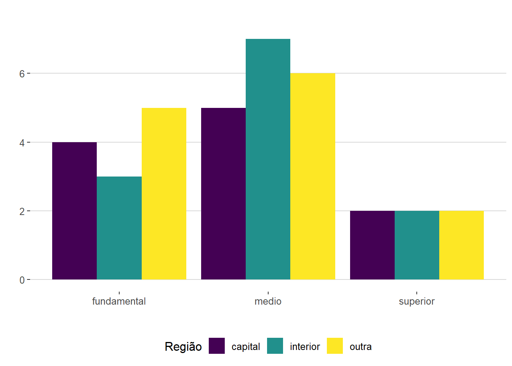
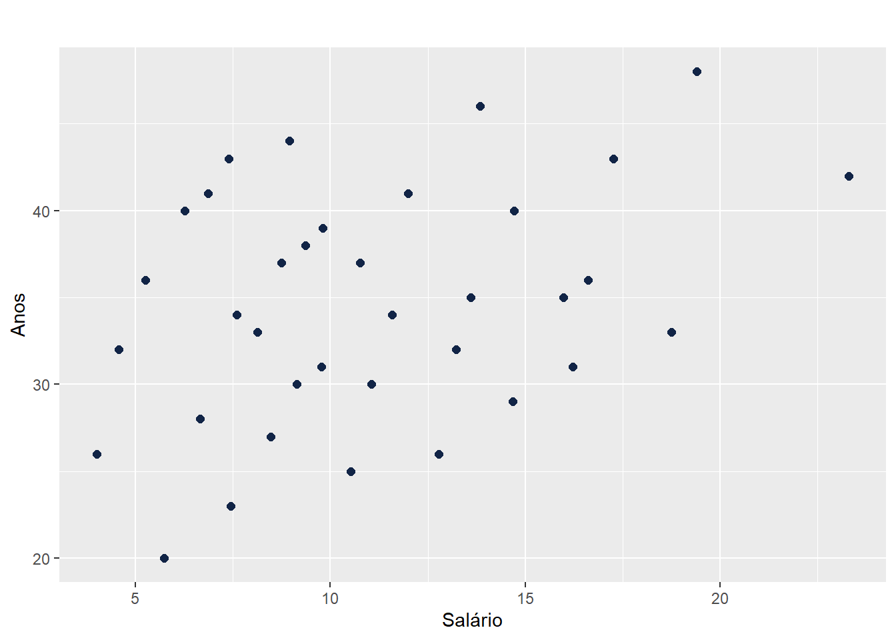
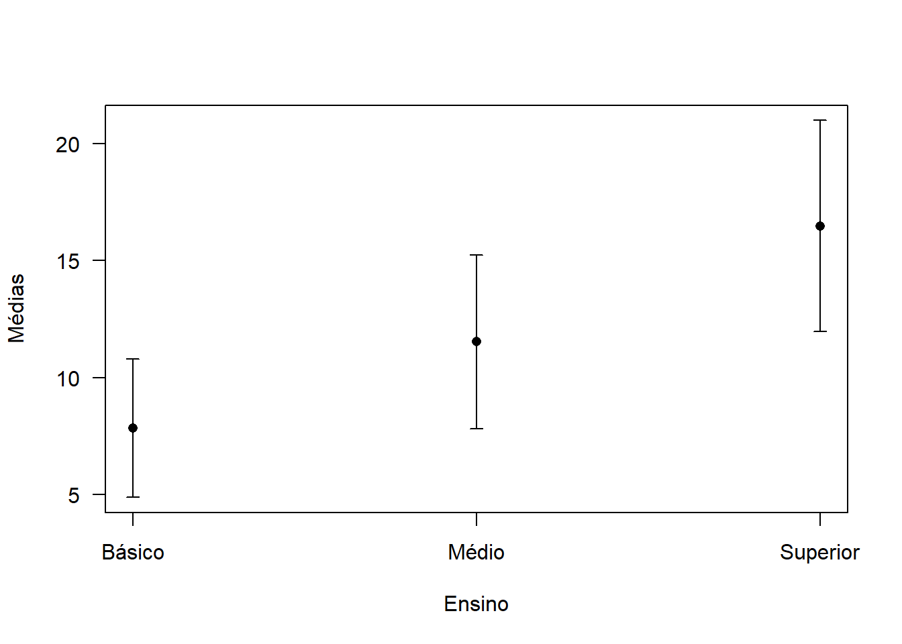
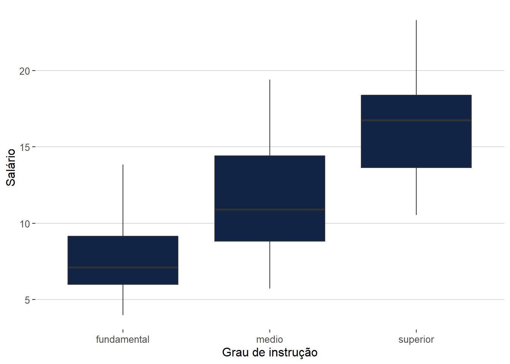

Atividade 1 - Estatística Computacional 2
Tabela de dados
Informações sobre estado civil, grau de instrução, número de filhos, salário (expresso como fração do salário mínimo), idade (medida em anos e meses) e procedência de 36 empregados da seção de orçamentos da Companhia MB.
| Estado civil | Grau de instrução | N° de filhos | Salário (x sal. min.) | anos | meses | Região de procedência |
|---|---|---|---|---|---|---|
| solteiro | ensino fundamental | - | 4,00 | 26 | 03 | interior |
| casado | ensino fundamental | 1 | 4,56 | 32 | 10 | capital |
| casado | ensino fundamental | 2 | 5,25 | 36 | 05 | capital |
| solteiro | ensino médio | - | 5,73 | 20 | 10 | outra |
| solteiro | ensino fundamental | - | 6,26 | 40 | 07 | outra |
| casado | ensino fundamental | 0 | 6,66 | 28 | 00 | interior |
| solteiro | ensino fundamental | - | 6,86 | 41 | 00 | interior |
| solteiro | ensino fundamental | - | 7,39 | 43 | 04 | capital |
| casado | ensino médio | 1 | 7,59 | 34 | 10 | capital |
| solteiro | ensino médio | - | 7,44 | 23 | 06 | outra |
| casado | ensino médio | 2 | 8,12 | 33 | 06 | interior |
| solteiro | ensino fundamental | - | 8,46 | 27 | 11 | capital |
| solteiro | ensino médio | - | 8,74 | 37 | 05 | outra |
| casado | ensino fundamental | 3 | 8,95 | 44 | 02 | outra |
| casado | ensino médio | 0 | 9,13 | 30 | 05 | interior |
| solteiro | ensino médio | - | 9,35 | 38 | 08 | outra |
| casado | ensino médio | 1 | 9,77 | 31 | 07 | capital |
| casado | ensino fundamental | 2 | 9,80 | 39 | 07 | outra |
| solteiro | superior | - | 10,53 | 25 | 08 | interior |
| solteiro | ensino médio | - | 10,76 | 37 | 04 | interior |
| casado | ensino médio | 1 | 11,06 | 30 | 09 | outra |
| solteiro | ensino médio | - | 11,59 | 34 | 02 | capital |
| solteiro | ensino fundamental | - | 12,00 | 41 | 00 | outra |
| casado | superior | 0 | 12,79 | 26 | 01 | outra |
| casado | ensino médio | 2 | 13,23 | 32 | 05 | interior |
| casado | ensino médio | 2 | 13,60 | 35 | 00 | outra |
| solteiro | ensino fundamental | - | 13,85 | 46 | 07 | outra |
| casado | ensino médio | 0 | 14,69 | 29 | 08 | interior |
| casado | ensino médio | 5 | 14,71 | 40 | 06 | interior |
| casado | ensino médio | 2 | 15,99 | 35 | 10 | capital |
| solteiro | superior | - | 16,22 | 31 | 05 | outra |
| casado | ensino médio | 1 | 16,61 | 36 | 04 | interior |
| casado | superior | 3 | 17,26 | 43 | 07 | capital |
| solteiro | superior | - | 18,75 | 33 | 07 | capital |
| casado | ensino médio | 2 | 19,40 | 48 | 11 | capital |
| casado | superior | 3 | 23,30 | 42 | 02 | interior |
Divisão entre variáveis quantitativas e qualitativas
Variáveis qualitativas
São aquelas cujos valores podem ser separados em diferentes categorias que se distinguem por alguma característica não numérica.
Em nossa tabela elas são: Estado civil, Grau de instrução, N° de filhos, Região de procedência
Variáveis quantitativas
Que exprime ou determina quantidade. São aquelas cujos valores são expressos em números.
Em nossa tabela elas são: Salário (x sal. min.), anos, meses
Associação entre duas variáveis qualitativas
Tabela de frequência dupla
| Capital | Interior | Outra | |
|---|---|---|---|
| Fundamental | 4 | 3 | 5 |
| Médio | 5 | 7 | 6 |
| Superior | 2 | 2 | 2 |
Tabela de frequência dupla relativa
| Capital | Interior | Outra | |
|---|---|---|---|
| Fundamental | 0.11111111 | 0.08333333 | 0.13888889 |
| Médio | 0.13888889 | 0.19444444 | 0.16666667 |
| Superior | 0.05555556 | 0.05555556 | 0.05555556 |
Gráfico de Barras

Teste de independência (qui-quadrado)
Esse teste permite verificar se há associação entre essas duas variáveis.
\(H_0\): o Grau de instrução não depende da região – p \(>\) 0.05
\(H_1\): o Grau de instrução depende da região - p \(\leq\) 0.05
Resultado do teste
Pearson’s Chi-squared test
X-squared = 0.66142, df = 4, p-value = 0.956
Logo, não podemos aceitar \(H_0\)
Associação entre duas variáveis quantitativas
Coeficiente de correlação
O Coeficiente de Correlação mede o grau da correlação entre duas variáveis de escala métrica. Normalmente assume valores somente entre -1 e 1. Tem como fórmula:
Corr(x, y) = \(\frac{\sum_{}^{}(x_i-\overline{x})(y_i-\overline{y})}{\sqrt{(x_i-\overline{x})^2(y_i-\overline{y})^2}}\)
A correlação entre as variáveis Salário e anos tem um Coeficiente de Correlação de 0.3633622, logicamente, a correlação de Salário e Salário ou entre anos e anos seria 1, como podemos ver abaixo:
| Salário | Anos | |
|---|---|---|
| Salário | 1.0000000 | 0.3633622 |
| Anos | 0.3633622 | 1.0000000 |
Podemos ver que as variáveis Salário e anos tem uma correlação de 0.3633622, que é considerada fraca
Teste do coeficiente de correlação
Esse teste serve para checarmos a eficácia do coeficiente de correlação, e tem como hipoteses:
\(H_0\): correlação verdadeiramente \(=\) 0: p \(>\) 0,05
\(H_1\): correlação verdadeiramente \(\neq\) 0: p \(\leq\) 0,05
t = 2.2742, df = 34, p-value = 0.02938
Logo, rejeitamos \(H_0\).
Covariância
A covariância é uma medida matemática na qual é possível compararmos duas variáveis, permitindo entender como elas se relacionam entre si.
A covariância tem como fórmula
Cov(x,y) = \(\frac{\sum_{}^{}(x_i-\overline{x})(y_i-\overline{y})}{N}\)
que se aplicada aos nossos dados nos retorna o valor de 11.23067
Diagrama de dispersão

Associação entre uma variável qualitativa (fator de variação) e outra quantitativa
As variáveis escolhidas foram Grau de instrução (qualitativa) e Salário (quantitativa).
Sobre a variável quantitativa, podemos tirar algumas medidas importantes.
Os quartis são medidas que dividem uma amostra de dados em quatro partes iguais. É útil para entendermos um pouco mais sobre dispersão e tendência central dos dados.
Os quartis da variável Salário são:
1° quartil: 7,5525
2° quartil: 10,1650 (mediana)
3° quartil: 14.0600
E a amplitude interquartílica é 6,5075 ou 14,0600 - 7,5525
A variável tem como média o valor de 11.12222 e mediana de 10,165
Agora, sobre a variável qualitativa podemos montar uma tabela de frequência
| Frequência | Proporção | |
|---|---|---|
| Fundamental | 12 | 33,3 |
| Médio | 18 | 50 |
| Superior | 6 | 16,7 |
Vamos agora usar dois gráficos para retratar um pouco da relação entre as variáveis. o gráfico de médias retrata as médias e o desvio padrão de cada grau de ensino
Gráfico de médias com desvio padrão
Gráfico de médias retrata as médias e o desvio padrão de cada grau de ensino

Boxplot
o boxplot contribui muito em uma análise exploratória por apresentar uma carga muito grande de informações, como limite inferior e superior dos dados, presença de dados discrepantes e os quartis da amostra.

Os dois gráficos exemplificam a significativa relação entre Salário e Grau de instrução.